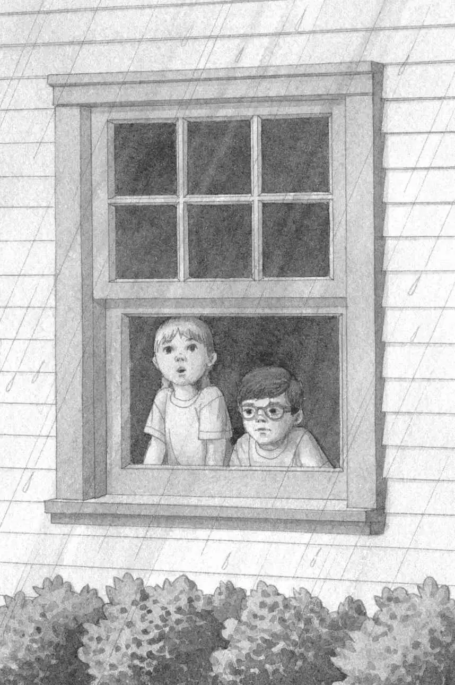
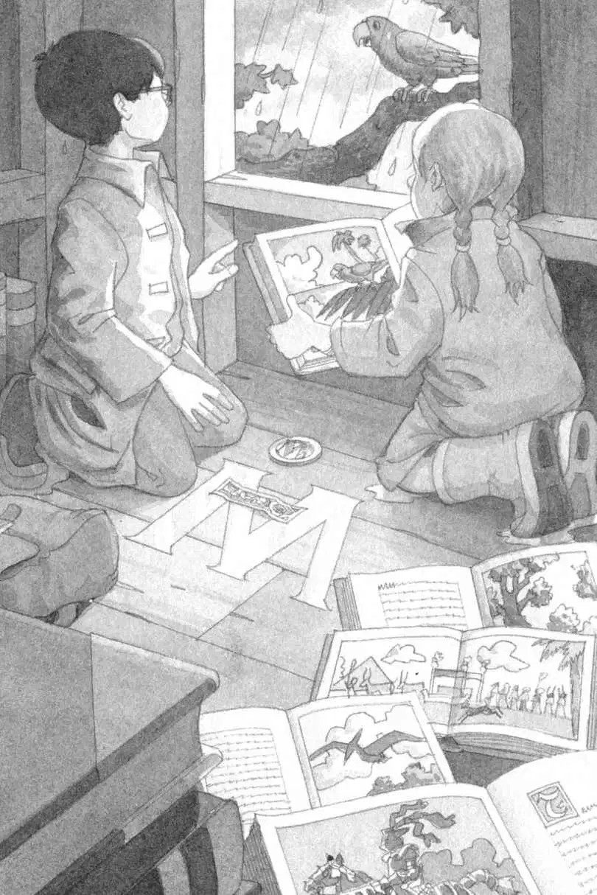

杰克从卧室的窗户往外看，雨还在哗哗地下个不停。
“电视上说，到中午雨就会停了。”他七岁的妹妹安妮说。
“中午已经过了。”杰克说。
“那我们快去树屋吧。”安妮说，“我有一种感觉，M今天会在那儿。”
杰克把眼镜往上推了推，深深吸了口气。他似乎还没有做好和M见面的准备。M就是那个在树屋里放了很多书的神秘人物。
“快走吧。”安妮说。
杰克叹了口气，说：“好吧，你去拿我们的雨衣和靴子，我拿勋章和书签。”
安妮跑去拿雨具了。
杰克把手伸进抽屉，掏出那枚勋章。
勋章是金质的，上面刻着一个字母M。
然后他又拿出那个蓝皮子做的书签，上面也印着同样的一个字母M。
这两个M，都跟树屋地板上的那个M一模一样。
杰克把勋章和书签装进背包，又把笔记本和铅笔塞了进去。每次碰到重要的事情，杰克总喜欢做点儿笔记。
“我把雨具拿出来了！”安妮喊道。
杰克拿起背包，走下楼，安妮正在后门口等着他呢。
安妮穿上靴子，说：“外面见。”
杰克穿上雨衣和靴子，然后背上背包，走出了门。
风刮得很猛。
安妮大喊一声：“各就各位！预备！跑！”
两人把脑袋一低，顶着狂风大雨往前冲。
不一会儿，他们就来到了蛙溪树林里。
树枝在大风中胡乱摇晃，把雨水甩向四面八方。
“真讨厌！”安妮说。
他们哗啦哗啦地踩过一个个水坑，最后来到了树林里最高的那棵大橡树前。
他们抬头往上看去。
夹在两根树枝之间的就是那个树屋。在狂风暴雨中，树屋看上去黑乎乎、孤零零的。
一架绳梯从树屋上垂下来，在风雨中不断地晃动。
杰克想到了树屋里的那些书，暗自希望它们不要被雨水淋湿。
“M来过了。”安妮说。
杰克吃惊得屏住了呼吸。
“你怎么知道？”他问。
“我有感觉。”安妮轻声答道。
安妮抓住绳梯，开始往上爬。杰克跟了上来。
树屋里寒冷、潮湿。
然而那些书都是干的，它们整整齐齐地靠墙摆放着，跟昨天一样。
安妮从一摞书上拿起一本骑士和城堡的书。这本书曾经把他们带到了古城堡时代。
“还记得那名骑士吗？”安妮问。
杰克点点头，他永远也不会忘记那名曾经帮助过他们的骑士。
安妮放下骑士和城堡书，拿起了搁在它下面的一本。
是恐龙书，这本书曾经带他们回到了恐龙时代。
“这本呢？你还记得吗？”安妮问。
杰克又点点头。他永远不会忘记，那只把他从雷克斯霸王龙嘴下救出来的无齿翼龙。
接着，安妮抽出了一本关于古埃及的书。
“喵。”她说。
杰克笑了。是这本埃及书把他们带到了金字塔时代，一只黑猫在危急时刻赶来相救。
“这本是关于我们家乡的书。”安妮说。
在她举起的那本书上，画着他们的家乡小镇——宾夕法尼亚的蛙溪。
杰克又露出了微笑。每一次冒险结束时，这本宾夕法尼亚的书都会把他们带回家。
“可是，把这些书放在树屋里的那个M是谁呢？还有骑士、无齿翼龙和黑猫，他们都认识M吗？”杰克想。
杰克叹了口气，这两大谜题都还没有答案。
他把手伸进背包，把金勋章和皮书签掏出来放在地板上，就放在那个微光闪烁的字母M上。
雨水被大风刮进了树屋。
“啊！”安妮说，“今天这儿可不暖和。”
杰克同意她的说法，树屋里太潮湿、太阴冷了。
“看，”安妮指着墙角一本摊开的书说，“我不记得有书是打开的。”
“我也是。”杰克说。
安妮拿起那本书，盯着上面的一幅图片。
“哇，这地方看上去真棒啊！”她把图片拿给杰克看。
杰克看见图片上有一片阳光灿烂的海滩，一只绿色的大鹦鹉栖息在一棵棕榈树上，蔚蓝色的大海上有一艘船在航行。
又一阵夹着雨水的狂风吹进了树屋。
安妮指着那幅图片说：“我们要是在这儿就好了。”
“没错。”杰克说，“但这儿是什么地方呢？”
“来不及啦！”突然，外面传来一声粗哑的叫喊。

杰克和安妮赶紧回身去看。
树屋窗台外面的一根树枝上站着一只绿色的鹦鹉，跟图片上的那只鹦鹉一模一样。
“来不及啦！”鹦鹉又叫了一声。
“一只会说话的鹦鹉！”安妮惊叹道，“你的名字叫波利吗？我可以叫你波利吗？”
突然，起风了。
“哦，糟糕！我们碰到大麻烦了！”杰克说。
风越刮越大。
树叶纷纷颤抖。
树屋开始旋转，越转越快。
杰克把眼睛闭得紧紧的。
忽然，一切都静止了。
完完全全地静止不动了。
杰克睁开眼睛，又听到了波利的叫声：“来不及啦！”